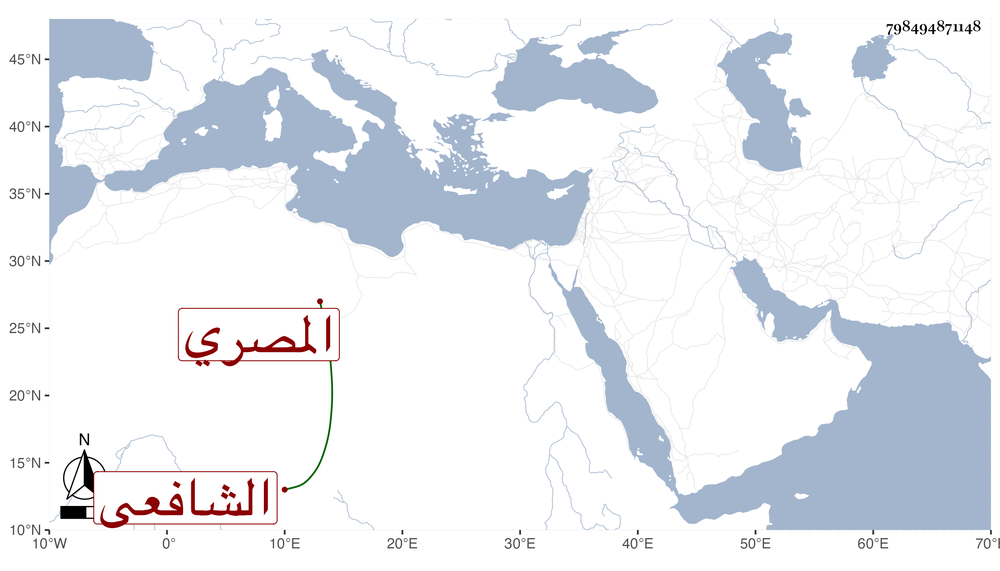

0902Sakhawi.DawLamic.ITO20230111-ara1.EIS1600.798494871148
Biography ID: 798494871148
933
محمد بن إبراهيم بن محمد الشمس بن البرهان بن الأدمي المصري الشافعي . ولد سنة سبعين وسبعمائة وسمع من ابن الفصيح بعض مسند أحمد ومن ناصر الدين بن الفرات بعض الشفا ، وحدث أخذ عنه النجم بن فهد وقال إنه مات في حدود سنة أربعين . وقال البقاعي أنه كان متكلما في اعتقاده شاع عنه ما دل على تمذهبه بمذهب ابن عربي قال : وقد أخذ عنه بعض أصحابنا وإنما كتبته للتحذير منه فعليه من الله ما يستحق ووقع في حق السيد يوسف الصديق عليه السلام بما يوجب ضرب العنق . انتهى فالله أعلم .
